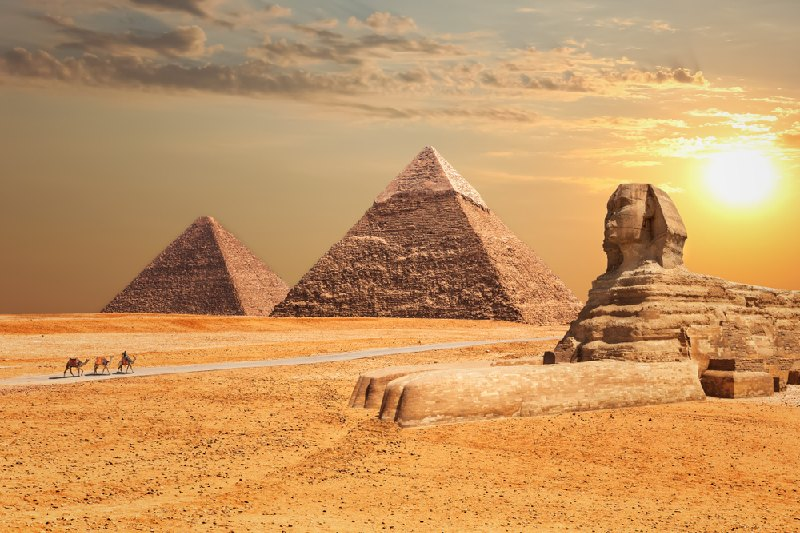

LISTADO DE LAS MARAVILLAS DEL MUNDO
LAS MARAVILLAS DEL MUNDO ANTIGUO
Las 7 Maravillas del Mundo Antiguo eran un conjunto de obras arquitectónicas y escultóricas que los autores griegos, especialmente los del período helenístico, consideraban dignas de admiración por su belleza, tamaño y complejidad técnica. Estas maravillas se encontraban dispersas por todo el mundo mediterráneo y representaban la cúspide de la ingeniería y la creatividad humana de la época
La piramide de giza
La Gran Pirámide de Guiza es el símbolo definitivo de Egipto, además de la última de las Siete Maravillas del Mundo. Se encuentra en la meseta de Guiza cerca de la moderna ciudad de El Cairo y fue construida a lo largo de 20 años durante el reinado del rey Kufu de la Dinastía IV (2589-2566 a.C., también conocido como Keops).
Hasta la construcción de la torre Eiffel en París, Francia, en 1889, la Gran Pirámide fue la estructura artificial más alta del mundo, un récord que mantuvo durante más de 3.000 años y que no parecía que nada fuera a romper. Otros estudiosos han señalado la torre de la catedral de Lincoln, en Inglaterra, construida en 1300, como la estructura que acabó por sobrepasar en altura a la Gran Pirámide, pero aun así el monumento egipcio ostentó el título durante un tiempo impresionante.
La pirámide se alza hasta una altura de 146 metros (479 pies), con una base de 230 metros (754 pies) y cuenta con más de dos millones de bloques de piedra. Algunos de estos bloques tienen tal tamaño y peso (tales como las losas de granito de la Cámara del rey) que incluso según los estándares modernos parece imposible colocarlos de la manera tan precisa en como están colocados.
-

La pirámide se excavó por primera vez con técnicas modernas y análisis científicos en 1880 a manos de Sir William Matthew Flinders Petrie (1853-1942), el arqueólogo británico que estableció las bases de las operaciones arqueológicas en Egipto en general y en Guiza específicamente. En sus escritos sobre la pirámide de 1883
Aunque persisten muchas teorías sobre el propósito de la pirámide, la explicación más aceptada es que se construyó como la tumba del rey. Sin embargo, su construcción exacta sigue siendo un misterio hoy en día
Estas teorías siguen surgiendo a pesar de que cada vez hay más pruebas que demuestran que la pirámide fue construida por los antiguos egipcios usando unos medios tecnológicos que, probablemente, eran tan comunes que no creyeron que hiciera falta ponerlos por escrito. Aun así, la complejidad de los pasadizos interiores, las cámaras (la Cámara del rey, la Cámara de la reina, y la Gran galería), así como el Pozo de Osiris cercano, junto con el misterio de cómo se construyó la pirámide y su orientación hacia los puntos cardinales predispone a que surjan estas teorías.